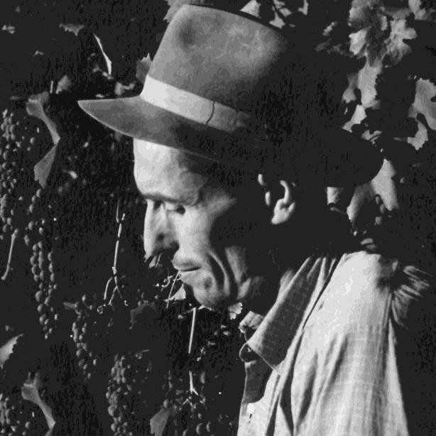
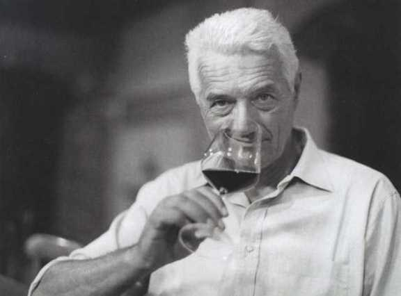
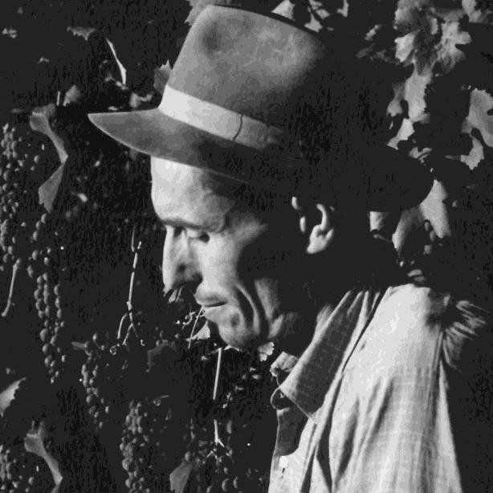
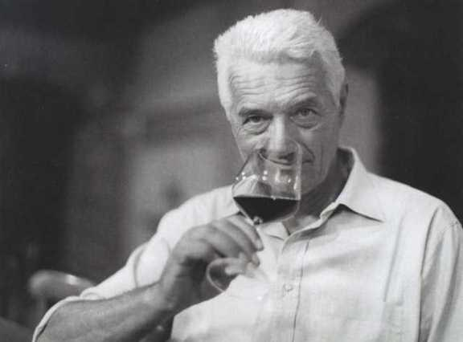

1900년대 초 셀소 아보나 (Celso Abbona)와 그의 아들
마르지아노 아보나 (Marziano Abbona)는
함께 위대한 여정을 시작했습니다.
셀소 아보나는 돌리아니의 잠재력을 믿고,
그 언덕에서 꽃을 피울 수 있는 포도 품종이
돌체토라는 것을 주장한 첫 세대였습니다.
셀소는 산타 루치아 (Santa Lucia di dogliani)에
위치한 전설적인 포도밭 브릭꼬 도리올로 (Bricco Doriolo)를 심었고,
오늘날 이 포도밭은 와이너리의 역사를 기억할 뿐만 아니라
돌리아니의 가장 권위 있는 크루가 되었습니다.